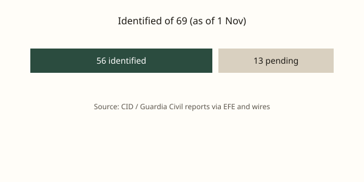

Toledo · accidente ferroviario · 1 de noviembre de 2026
El Centro Integrado de Datos informa de que 56 de las 69 personas fallecidas en el choque de Urda ya han sido identificadas; 31 permanecen hospitalizadas.

Lo que coinciden los medios
El accidente ocurrió el 28 de octubre de 2026 hacia las 08:54 CET en el punto kilométrico 118 de la línea de alta velocidad Madrid-Sevilla, cerca de Urda (Toledo). Un AVE de Renfe embistió por detrás a un tren de Iryo que se encontraba detenido en la vía. El balance provisional se mantiene en 69 fallecidos y más de 100 heridos. Según el Centro Integrado de Datos (CID) y las notas de EFE y agencias, a fecha del 1 de noviembre se habían identificado 56 de las 69 víctimas mortales: 54 de nacionalidad española, una francesa y una portuguesa. De las 56, 52 se realizaron por huella dactilar (Servicio de Criminalística de la Guardia Civil) y 4 por ADN. Se habían notificado 51 identificaciones a las familias (33 hombres y 18 mujeres).
Quedan 13 víctimas pendientes de identificación, todas de nacionalidad extranjera según las denuncias de desaparición activas (nacionalidades mencionadas en los partes: Argentina, Australia, Canadá, EE.UU., Japón, México, República Checa, Túnez, entre otras). El número de hospitalizados en Castilla-La Mancha había bajado a 31, de los cuales 13 seguían en UCI; otras personas habían recibido el alta. La jueza instructora pidió medios urgentes para retirar vagones y acelerar la búsqueda de restos. El Gobierno anunció que el martes aprobaría ayudas y que el ministro Óscar Puente presentaría un informe.
Lo que es solo una cita
Las afirmaciones de que “cuatro sistemas fallaron” o de que se trata de una “cadena de fallos por encima del error humano” son valoraciones de investigación o de portavoces; no son el informe final de la comisión de investigación de accidentes ferroviarios. Las peticiones de dimisión del ministro son posiciones políticas de la oposición. Las declaraciones de Renfe o Adif sobre el estado de los sistemas de protección son declaraciones de parte hasta que el expediente técnico esté cerrado.
Mecanismo que el lector necesita
En la alta velocidad española el sistema principal de protección (ETCS/ERTMS y el bloqueo) está diseñado para impedir que un tren alcance a otro detenido. Cuando el sistema principal cae, se recurre a procedimientos de seguridad degradados (señalización lateral, órdenes desde el Centro de Control de Adif, marcha a la vista o a velocidad reducida). El choque se produjo cuando el AVE circulaba a una velocidad aún elevada (las fuentes hablan de 160-200 km/h en el momento del impacto) contra un Iryo detenido. La investigación debe aclarar por qué el tren de delante estaba parado, qué avisos recibió el maquinista del AVE, y en qué estado se encontraban los sistemas de protección y comunicación en los 22 minutos previos. Esos datos están en los registradores de eventos, las grabaciones de control y los partes de Adif; aún no son públicos en su totalidad.
La identificación forense combina huella, ADN y, cuando es necesario, cooperación internacional para extranjeros. El descenso del número de hospitalizados refleja altas médicas y traslados, no una reducción del total de afectados. La retirada de vagones es tanto una necesidad operativa para la investigación como un requisito para el restablecimiento del tráfico. El luto oficial de tres días había concluido; la presión política sobre el ministerio de Transportes continúa en paralelo a la investigación técnica.
Lo que esta noticia no es
No es la causa final del accidente. No es un recuento definitivo de fallecidos (el balance sigue siendo provisional mientras quedan restos y denuncias). No es una evaluación de responsabilidad política. La fotografía superior es una imagen de tipo de un ETR 1000; no muestra el convoy siniestrado ni la zona de Urda.

Artículos fuente y puntuaciones
| Medio | Titular | T | N | C |
|---|---|---|---|---|
| EFE / Infobae | Temas del día de EFE España del domingo 1 de noviembre de 2026 | 96 | 0 | 100 |
| El Mundo | Ya se ha identificado a 56 de los 69 fallecidos en el accidente de tren de Urda | 94 | 0 | 98 |
| El Español | Descienden a 31 los heridos ingresados tras el choque de trenes en Urda | 93 | -5 | 95 |
| Wikipedia (resumen) | 2026 Toledo train collision | 90 | 0 | 100 |
Imágenes: Wikimedia Commons fotografía de tipo ETR 1000 vía Special:FilePath. Leyendas indican que no es el tren accidentado. Gráfico SVG original. onerror a SVG local. Sin CDN de agencias de noticias como única fuente.